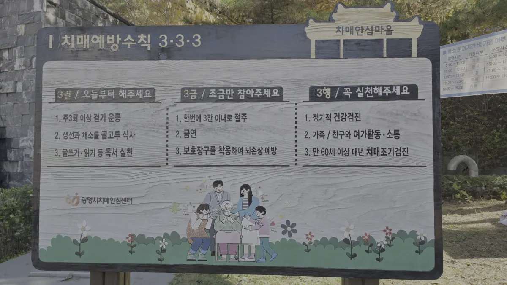

가족과 함께 읽는 안내서
치매 생활정보
오늘 실천할 예방 습관부터 기억이 걱정될 때 받을 검사와 가족을 돌보는 방법까지, 필요한 주제를 골라보세요.

01 / 예방과 생활습관
치매예방수칙 3·3·3
즐길 것 세 가지, 참을 것 세 가지, 챙길 것 세 가지입니다. 아홉 가지 중 오늘 할 수 있는 한 가지부터 골라보세요.
3권 즐길 것
- 걷기몸 상태에 맞춰 일주일에 세 번 이상 걷는 시간을 정해 보세요.
- 식사생선과 채소를 식탁에 번갈아 올려 여러 음식을 고루 드세요.
- 읽고 쓰기좋아하는 글을 읽거나 오늘 있었던 일을 몇 줄 써 보세요.
3금 참을 것
- 절주술 마시는 양과 횟수를 줄이세요.
- 금연담배를 피운다면 금연을 시작해 보세요.
- 머리 보호자전거를 탈 때는 헬멧을 쓰는 등 머리를 다치지 않게 보호하세요.
3행 챙길 것
- 건강검진혈압·혈당·콜레스테롤 수치를 정기적으로 확인하세요.
- 소통가족이나 친구와 통화하거나 함께할 시간을 정해 보세요.
- 조기검진가까운 치매안심센터에 검사 대상과 내게 맞는 검사 시기를 물어보세요.
02 / 기억 변화와 검진
어떤 변화가 있을 때 상담할까요?
최근 약속을 자꾸 잊거나 익숙한 길을 찾기 어려워지는 등, 전에는 수월했던 일이 반복해서 어려워지면 의료기관이나 치매안심센터에 상담하세요. 한 가지 증상만으로 치매를 판단할 수는 없습니다.
누가 검사를 문의할 수 있나요?
보건복지부의 조기검진사업은 치매나 경도인지장애로 진단받지 않은 주민을 대상으로 합니다. 검사비 지원에는 별도의 기준이 있으니, 거주 지역 센터에 확인하세요.
검사는 이렇게 이어집니다
- 선별검사센터에서 기억력 등 인지 기능을 살펴봅니다. 이 검사만으로 치매를 확진하지 않습니다.
- 진단검사추가 평가가 필요하면 전문의 진료와 신경인지검사로 치매 여부를 확인합니다.
- 감별검사원인을 더 살펴봐야 할 때 혈액검사나 뇌 영상검사 등을 진행합니다.
갑자기 한쪽 팔에 힘이 빠지거나 말이 어눌해졌다면 뇌졸중 신호일 수 있습니다. 검진 예약을 기다리지 말고 119에 연락하세요.
03 / 가족 돌봄
대화를 이어가고, 돌봄을 나누는 법
말이 바로 나오지 않을 때는 가족이 대신 답하기보다 기다려 주세요. 상대가 스스로 선택하고 이야기할 시간을 갖는 것이 중요합니다.
한 번에 한 가지씩 물어보세요
눈높이를 맞추고 쉬운 말로 짧게 이야기하세요. 여러 가지를 한꺼번에 묻기보다 “지금 산책할까요?”처럼 하나만 물어보고 대답을 기다려 보세요. 기억이 다르더라도 틀렸다고 지적하기보다 지금 느끼는 마음을 먼저 들어주세요.
돌보는 가족도 도움을 받을 수 있습니다
- 가족교실
- 치매로 달라진 행동을 이해하고 돌보는 방법을 배우는 자리입니다.
- 자조모임
- 비슷한 경험이 있는 가족끼리 만나 어려움과 생활 속 방법을 나눕니다.
- 쉼터
- 대상에 해당하는 분이 낮 동안 인지활동에 참여할 수 있습니다. 이용 조건과 대기 여부는 센터에 확인하세요.
자료 출처복지로 · 나에게 힘이 되는 치매 가이드북 (PDF, 책자 78쪽)광명시 보건소 · 쉼터와 가족지원 운영 예시
04 / 실종 예방과 대응
길을 잃었을 때 무엇부터 할까요?
마지막으로 본 시간과 장소, 옷차림을 알려주세요. 최근 사진이 있으면 경찰에 전달하세요. 사진을 찾느라 신고를 미루지 마세요.
경찰 112에 실종 신고평소에 준비할 수 있는 두 가지
- 지문 등 사전등록
- 경찰에 지문·얼굴 사진·보호자 연락처를 미리 등록하면 신원 확인에 쓰입니다. 안전Dream 앱이나 가까운 경찰관서에서 등록 방법을 확인하세요.
- 배회가능 어르신 인식표
- 옷에 부착하는 고유번호 표식입니다. 실종 위험이 있다면 주소지 치매안심센터에 신청 대상과 준비물을 문의하세요.
05 / 비용과 지역 지원
진단 후 어떤 지원을 문의할 수 있나요?
주소지 치매안심센터에서 환자 등록과 지원 신청을 상담할 수 있습니다. 사업마다 신청 대상이 다르고, 지원 금액·물품·신청 서류는 지역과 시기에 따라 달라질 수 있습니다.
- 치료관리비
- 치매 진료비와 약값 중 본인부담금 일부를 지원하는 사업입니다. 진단·치료·소득 등 어떤 기준을 충족해야 하는지 확인하세요.
- 돌봄 물품
- 가정에서 돌볼 때 필요한 기저귀 등 위생용품을 지원하는 사업이 있습니다. 받을 수 있는 품목과 기간은 관할 센터에 문의하세요.
- 맞춤형 사례관리
- 돌봄이 막막하다면 지금 가장 어려운 일을 이야기하세요. 상담을 통해 필요한 지역 서비스와 연계할 수 있습니다.